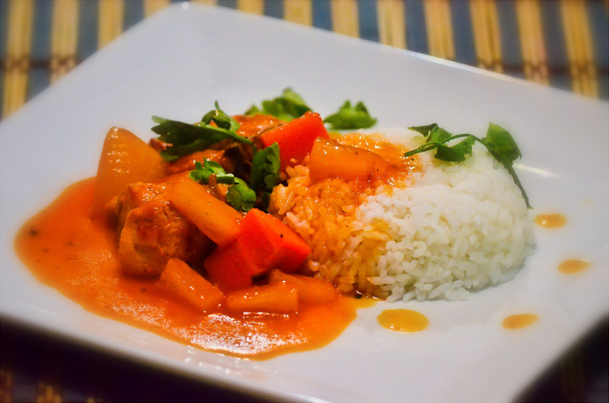
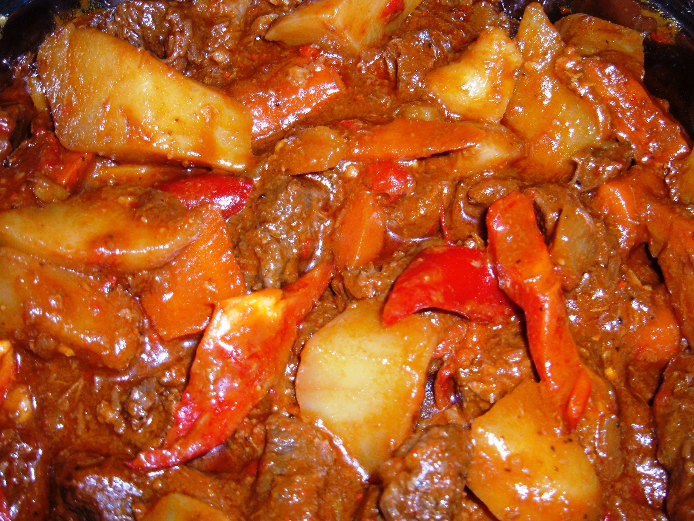
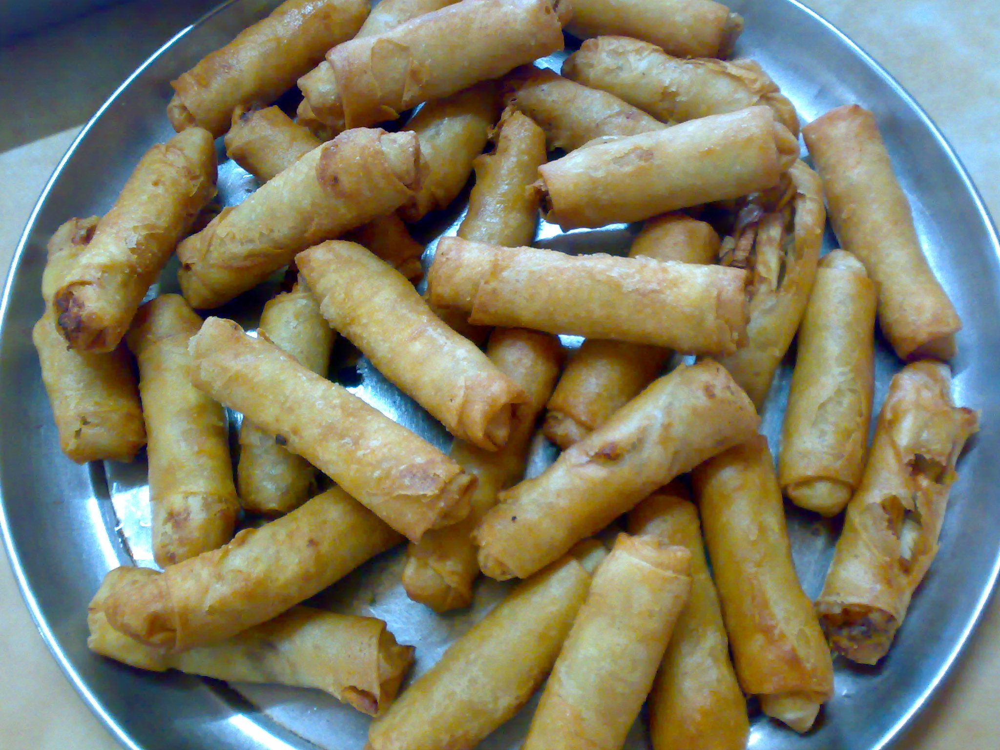
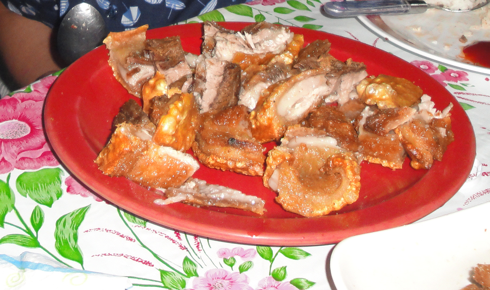
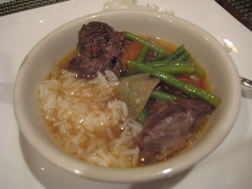

The following dishes are typically paired with white rice with the exception of Lumpia and Filipino spaghetti, but often times at a get together, they still make it all on the plate side by side. At meal time, you would usually have one of these dishes and rice for a meal.

Adobo: The protein is either chicken or pork. It is combined with soy sauce, garlic, bay leaf, vinegar.
Afritada: It is a dish with chicken with potato, carrots, tomato sauce, and bell pepper.
Mechado: It has beef with tomato paste and potato.
Lumpia: It has an all meat (usually pork) filling and wrapped in a rice wrapper. It is fried golden brown.

Bistek (Filipino style beefsteak): It has beef, lemon juice or calamansi juice, soy sauce, sliced onions. It's savory with a hint of tartness due to the citrus.
Lechon Kawali: It is a deep, fried pork belly. It can be eaten alone, but many people pair it with a variety of dipping sauces such as vinegar with garlic.

Pancit bihon: Rice stick noodles with chicken, pork, or shrimp. It tastes even better when a lemon slice or calamansi is squeezed onto the noodles.
Sinigang: It can be made with different protein such as pork ribs, fish (milkfish or catfish), shrimp, or beef short ribs. It is a sour soup because of a tamarind base.

Filipino Spaghetti: spaghetti noodles with a sweet tomato sauce and hot dogs.
Photo Credits
wikimedia commons
wikimedia commons
wikimedia commons
wikimedia commons
Jennifer Yin on flickr